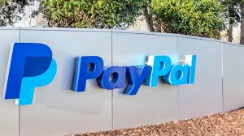

PayPal ,amerikalik 2000 yil mart oyida Internet- pul o'tkazmalariga ixtisoslashgan elektron tijorat kompaniyasi . Bu Internet- kim oshdi savdosi kompaniyasi tomonidan juda ko'p ishlatilgan2002 yildan 2015 yilgacha PayPal-ga egalik qilgan eBay . Paypal X.com va Confinity o'rtasida birlashma mahsuloti bo'lib, foydalanuvchilarga sotib olingan tovarlarga to'lovlarni amalga oshirish yoki xavfsiz onlayn operatsiyalarda hisobvaraqlar o'rtasida pul almashtirish imkoniyatini yaratdi.

After watching PayPal become the premier choice of Internet auction shoppers, online marketplace giant eBay acquired PayPal for $1.5 billion in October 2002. The company offers users the ability to link their PayPal accounts to their own bank accounts, making transfers and payments more efficient than money orders or checks. Fees are collected by eBay on certain transactions and are determined based on the amount of the transaction, the nature of the transaction, and the currency type of the transaction In 2015 PayPal was spun off into an independent company, but it continued to be used by eBay. A sophisticated series of security advancements helped PayPal remain a respected company in terms of identity theft prevention. The company implemented superior anti-phishing and anti-hacking measures, and it developed a portable “key” device that requires manual activation before a transfer from a PayPal account is processed. PayPal allows consumers to contest and request a refund in transactions where they have been misled or cheated. Additionally, PayPal offers a type of limited protection for sellers and includes a system that deactivates accounts when suspicious or excessive activity is observed.
PayPal — internet orqali turli toʻlov va pul oʻtkazmalarini amalga oshiruvchi elektron tijorat kompaniyasi. 1998-yilda Amerikaning Kalifornia shtatida asos solingan. Kompaniyaning asosiy faoliyati eBay internet bozoridagi savdo amaliyotlari bilan bogʻliqdir.